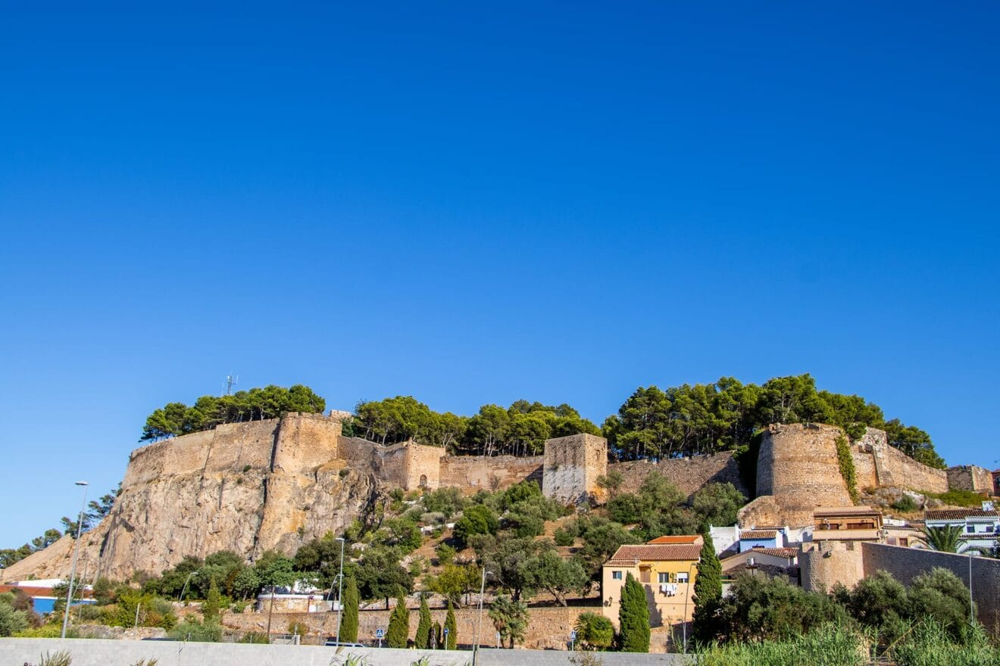
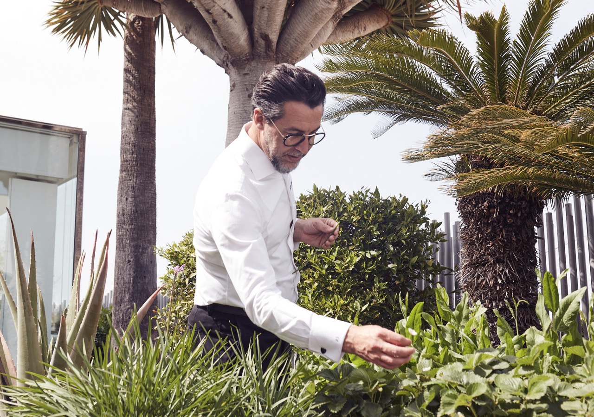
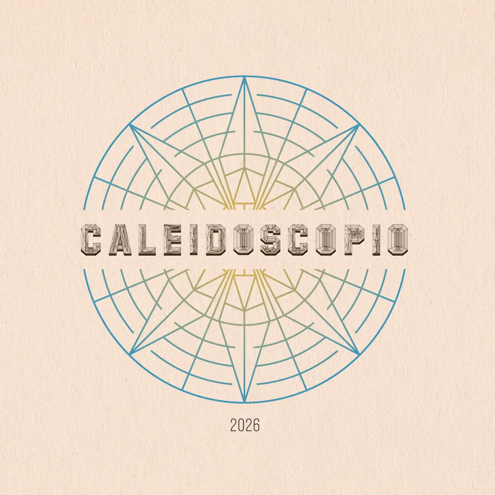
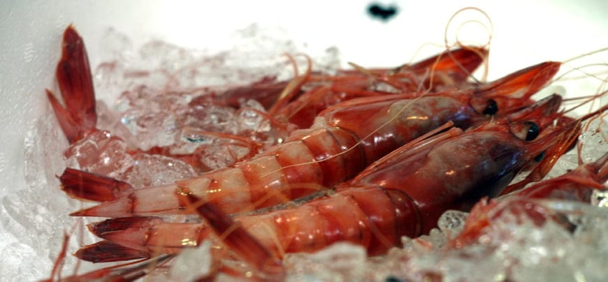
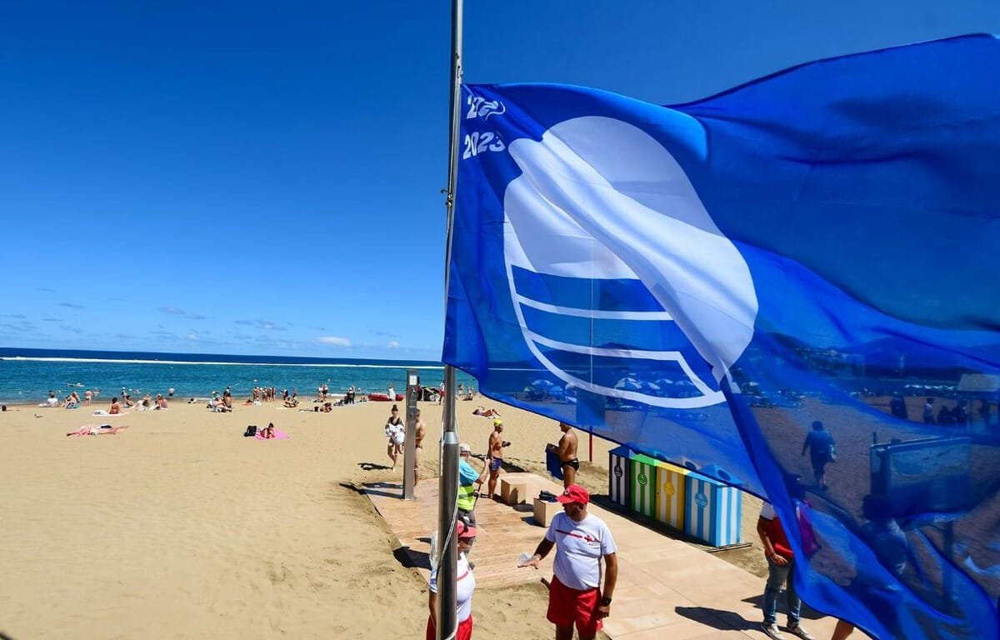

Costa Blanca · Valencian Community · Spain
A Michelin Weekend
in Dénia
One 3-star table. Thirty seats. A UNESCO city of gastronomy built on a red prawn. Here's how to frame a weekend around it.
"The reservation gates the entire weekend. Confirm the table first — then build everything else around it."
The single structural rule for this trip
Quique Dacosta
Las Marinas Beach · Dénia · 3 km from centre[17]

BonAmb
Jávea (Xàbia) · 16 km / 20 min from Dénia[2]
Saturday
The Dinner Day
Mercat Municipal opens at 8 AM — fishmonger nave then a tapa at Bar Magallanes inside[9]. Market morning on the day before the fine-dining reservation, not after — save the appetite for the evening.
Wander Dénia Castle (€3; panoramic 60 m views)[20], then the free Archaeological Museum in Casa de la Marquesa.
Snorkel at Punta Negra or Les Rotes coves (1.5 km south of centre, marine reserve, first Blue Flag 2025)[3]. Quique Dacosta is just 3 km further north along Las Marinas beach — a natural circuit.
Sunday
The Free Day
Kayak to Cova Tallada — the sea cave requires a free permit Jun 15–Oct 15[11], but arriving by kayak with an authorised operator needs no reservation[12]. ~€50 pp, 2.5 h, 4 km[23].
Montgó summit (753 m) — 3–5 h return from the shooting-range car park, exposed ridge scramble, start early to beat the heat[13]. Not for vertigo sufferers.
Jávea day + BonAmb — Cap de Sant Antoni mirador (free, 24/7, 150 m+ cliffs)[5], Cap de la Nau's sea cave[6], dinner at BonAmb Thu–Sat.
Beach morning at Les Marines (sandy, lifeguarded, Blue Flag) — gentle close to the weekend[21].

UNESCO Creative City of Gastronomy, 2015
The Red Prawn Problem
Dénia's gamba roja is netted at ~600 m depth between Cape San Antonio and Ibiza. Each boat lands one or two boxes a day[8]. The same animal that appears boiled whole in seawater at a market counter — no sauce, three minutes, nothing added — resurfaces as molecular sculpture in the tasting menu thirty paces away.
The arc from street to 3-star is the point. Plan a market lunch on the day before the big dinner: the Mercat Municipal (Mon–Sat, 08:00–15:00) has in-market tapas bars for exactly this[9]. For rice, the specialists on Calle Loreto — El Pegolí (since 1943), Casa Federico, Haití — all do the local arròs a banda[10].
Castillo de Dénia
€3 · 60 m hilltop · panoramic Mediterranean views · ~2–3 h[20]

Montgó Natural Park
Summit at 753 m · hard trail · 3–5 h return · early start essential in summer[13]
-
150 m+ cliffs where Montgó meets the sea. The mirador overlooks Xàbia bay; Ibiza visible on clear days.[5]
-
Dramatic cliffs, octagonal lighthouse at 122 m, and the boat-accessible Cova dels Òrgans sea cave.[6]
-
Calpe — Peñón de Ifach
332 m limestone monolith. ~5 km summit hike, 2.5–4 h, free permit required (300/day cap).[28]
-
Vall de Pop along the Gorgos river. Bodegas Xaló runs guided cellar tour + tasting + tapas for ~€10/person.
-
Baleària high-speed ferries direct from Dénia port — the only ferry-reachable islands this close to the mainland.
By air
Alicante (ALC) is the closer airport — ~1 h 7 min / 106 km via AP-7. Valencia airport ~1 h 20 min / 113 km.[26]
By bus
ALSA runs 16+ daily coaches from Valencia and 15+ from Alicante — the fastest no-car option.[27]
Best months
May, June and September — warm, uncrowded. 300+ sunny days/year. Summer is the busiest window.[25]